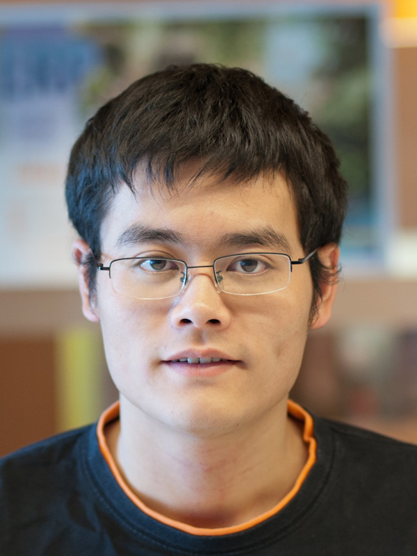

Kaifei Chen (陈凯飞)
[My First Name]berkeley.edu
Kaifei is a Software Engineer at Waymo. He obtained his Ph.D. in Computer Science at the University of California, Berkeley in summer 2018, advised by Prof. Randy Katz and Prof. David Culler. He was in the Building, Energy, Transportation Systems group. His research interests are in the areas of sensor systems, networking, and applications, such as indoor localization, mobile augmented reality, and smart buildings.
MARVEL: Enabling Mobile Augmented Reality with Low Energy and Low Latency
Kaifei Chen, Tong Li, Hyung-Sin Kim, David E. Culler, and Randy H. Katz.
SenSys 2018
[PDF][Slides]
System Architecture Directions for Post-SoC/32-bit Networked Sensors
Hyung-Sin Kim, Michael P Andersen, Kaifei Chen, Sam Kumar, William J. Zhao, Kevin Ma, and David E. Culler.
SenSys 2018
Best Paper Runner-up
[PDF]
SnapLink: Fast and Accurate Vision-Based Appliance Control in Large Commercial Buildings
Kaifei Chen, Jonathan Fürst, John Kolb, Hyung-Sin Kim, Xin Jin, David E. Culler, and Randy H. Katz.
IMWUT, Vol. 1, No. 4, 2017, to be presented at UbiComp 2018
[PDF][Slides]
Democratizing Authority in the Built Environment
Michael P Andersen, John Kolb, Kaifei Chen, David E. Culler, and Randy Katz.
BuildSys 2017
[PDF]
Leveraging Physical Locality to Integrate Smart Appliances in Non-Residential Buildings with Ultrasound and Bluetooth Low Energy
Jonathan Fürst, Kaifei Chen, Mohammed Aljarrah, and Philippe Bonnet.
IoTDI 2016
[PDF]
RushNet: Practical Traffic Prioritization for Saturated Wireless Sensor Networks
Chieh-Jan Mike Liang, Kaifei Chen, Nissanka Bodhi Priyantha, Jie Liu, and Feng Zhao.
SenSys 2014
[PDF][Slides]
Design and Evaluation of a Wireless Magnetic-based Proximity Detection Platform for Indoor Applications
Xiaofan Jiang, Chieh-Jan Mike Liang, Kaifei Chen, Ben Zhang, Jeff Hsu, Bin Cao, Jie Liu, and Feng Zhao.
IPSN 2012
[PDF]
PANDAA: Physical Arrangement Detection of Networked Devices through Ambient-Sound Awareness
Zheng Sun, Aveek Purohit, Kaifei Chen, Shijia Pan, Trevor Perring, and Pei Zhang.
UbiComp 2011
Affiliated demo won the Best Demo Award
[PDF]
Automated Wireless Localization Data Acquisition and Calibration with 6DOF Image Localization
Jonathan Fürst, Kaifei Chen, Gürkan Solmaz, Ernö Kovacs
The International Workshop on Combining Physical and Data-Driven Knowledge in Ubiquitous Computing (CPD) 2018
[PDF]
Towards Adaptive Actors for Scalable IoT Applications at the Edge
Jonathan Fürst, Mauricio Fadel Argerich, Kaifei Chen, Ernö Kovacs
The International Workshop on Very Large Internet of Things (VLIoT) 2018
[PDF]
Evaluating Bluetooth Low Energy for IoT
Jonathan Fürst, Kaifei Chen, Hyung-Sin Kim, Philippe Bonnet.
The International Workshop on Benchmarking Cyber-Physical Networks and Systems (CPSBench) 2018
[PDF]
Crowd-sourced BMS Point Matching and Metadata Maintenance with Babel
Jonathan Fürst, Kaifei Chen, Randy H. Katz, and Philippe Bonnet.
The International Workshop on Crowd-Assisted Sensing, Pervasive Systems, and Communications (CASPer) 2016
[PDF]
BearLoc: A Composable Distributed Framework for Indoor Localization Systems
Kaifei Chen, Siyuan He, Beidi Chen, John Kolb, Randy H. Katz, and David E. Culler.
The International Workshop on IoT Challenges in Mobile and Industrial Systems (IoT-Sys) 2015
[PDF][Slides]
Accurate Real-time Occupant Energy-footprinting in Commercial Buildings
Yun Cheng, Kaifei Chen, Ben Zhang, Chieh-Jan Mike Liang, Xiaofan Jiang, and Feng Zhao.
BuildSys 2012
[PDF]
Location-log: Bringing Online Shopping Benefits to the Physical World with Magnetic-based Proximity Detection
Ben Zhang, Kaifei Chen, Yun Cheng, Xiaofan Jiang, Chieh-Jan Mike Liang, and Feng Zhao.
The International Workshop on Mobile Sensing 2012
[PDF]
Smart Appliance Identification using Smartphone Camera
Kaifei Chen, John Kolb, Jonathan Fürst, David E. Culler, and Randy H. Katz.
HotMobile 2017
[PDF]
Demo Abstract: Human-in-the-loop BMS Point Matching and Metadata Labeling with Babel
Jonathan Fürst, Kaifei Chen, Randy H. Katz, and Philippe Bonnet.
BuildSys 2015
[PDF]
Demo: Creating Interactive Virtual Zones in Physical Space with Magnetic-Induction
Xiaofan Jiang, Chieh-Jan Mike Liang, Feng Zhao, Kaifei Chen, Jeff Hsu, Ben Zhang, and Jie Liu.
SenSys 2011
Best Demo Award
[PDF]
Poster Abstract: Intuitive Appliance Identification using Image Matching in Smart Buildings
Kaifei Chen, John Kolb, Jonathan Fürst, Dezhi Hong, and Randy H. Katz.
BuildSys 2015
[PDF] [Poster]
Poster Abstract: Shipping Data from Heterogeneous Protocols on Packet Train
Chieh-Jan Mike Liang, Kaifei Chen, Jie Liu, Nissanka Bodhi Priyantha, and Feng Zhao.
IPSN 2012
[PDF]
Vision-based Appliance Identification and Control with Smartphone Sensors in Commercial Buildings
Kaifei Chen.
UC Berkeley Dissertation
[PDF]
WAVE: A Decentralized Authorization System for IoT via Blockchain Smart Contracts
Michael P Andersen, John Kolb, Kaifei Chen, Gabriel Fierro, David E. Culler, and Raluca Ada Popa.
UC Berkeley EECS Technical Reports 2017
[PDF]
The Case for a Local Tier in the Internet of Things
John Kolb, Kaifei Chen, Randy H. Katz
UC Berkeley EECS Technical Reports 2016
[PDF]
CellMate: A Responsive and Accurate Vision-based Appliance Identification System
Kaifei Chen, Takeshi Mochida, Jonathan Fürst, John Kolb, David E. Culler, Randy H. Katz
UC Berkeley EECS Technical Reports 2016
[PDF]
Design and Evaluation of an Indoor Positioning System Framework
Kaifei Chen, Karthik Reddy Vadde.
UC Berkeley EECS Technical Reports 2016
[PDF]
Intuitive Appliance Identification using Image Matching in Smart Buildings
Kaifei Chen, John Kolb, Jonathan Fürst, Dezhi Hong, David E. Culler, and Randy H. Katz.
UC Berkeley EECS Technical Reports 2015
[PDF]
2018: TPC: CPD 2018 (Workshop in Ubicomp), Reviewer: SenSys 2018 Demo, IMWUT/UbiComp (August), INFOCOM 2019, IEEE IoT Journal
2017: TPC: SCIE 2017 (Workshop in SECON)
2016: TPC: IPSN 2016 Demo, SenSys 2016 Demo, MobiSys 2016 PhD Forum
2014: Reviewer: ICPADS 2014